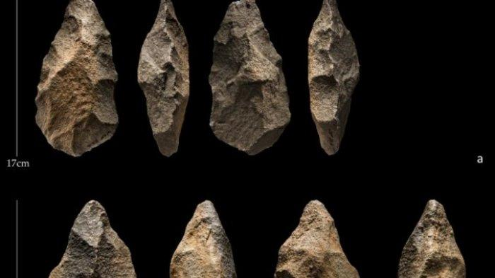

Kajian mengenai manusia awal yang mendiami kepulauan Indonesia merupakan hal yang menarik dan penuh perdebatan. Berbagai pendapat atau teori muncul yang berhubungan dengan keberadaan manusia Indonesia. Perbedaan pendapat atau teori ini berkembang sejalan dengan kemampuan para ahli untuk menafsirkan hasil-hasil temuan mereka di kepulauan Indonesia.
Hasil Budaya Manusia Purba di Indonesia
kapak perimbas (Chopper)
Kapak penetak
Kapak genggam
Pahat genggam
Alat serpih
Alat Alat dari tulang

A.Teori Von Heine Geldern
Berdasarkan teori Von Heine Geldern diketahui bahwa nenek moyang bangsa Austronesia, yang mulai datang di kepulauan Indonesia kira-kira 2000 tahun S.M ialah pada zaman neolithik. Kebudayaan ini mempunyai dua cabang ialah cabang kapak persegi yang penyebarannya dari dataran Asia melalui jalan barat dan peninggalannya terutama terdapat di bagian barat Indonesia dan kapak lonjong yang penyebarannya melalui jalan Timur dan peninggalan-peninggalannya merata di bagian timur negara kita. Pendukung kebudayaan neolithik (kapak persegi) adalah bangsa Austronesia dan gelombang perpindahan pertama tadi disusul dengan perpindahan pada gelombang kedua yang terjadi pada masa perunggu kira-kira 500 S.M. Perpindahan bangsa Austronesia ke Asia Tenggara khususnya dengan memakai jenis perahu cadik yang terkenal pada masa ini. Pada masa ini diduga telah tumbuh perdagangan dengan jalan tukar menukar barang (barter) yang diperlukan. Dalam hal ini sebagai alat berhubungan diperlukan adanya bahasa. Para ahli berpendapat bahwa bahasa Indonesia pada masa ini adalah Melayu Polinesia atau dikenal dengan sebagai bahasa Austronesia.
Perkembangan teknologi nenek moyang bangsa Indonesia
Perkembangan alat dan teknologi kehidupan manusia pada masa lalu, yaitu pada masa hidup berburu dan mengumpulkan dapat dikatakan masih sangat sederhana, hampir semua alat yang dipergunakan untuk mencukupi kebutuhan hidup masih sangat sederhana. Alat yang dibuat sekadar dapat membantu pekerjaan mereka. Alat-alat bantu dibuat dari batu dan tulang. Tujuan pembuatan alat untuk mempermudah memperoleh bahan makanan yang menjadi kebutuhan pokok.
Pada masa bercocok tanam, kebudayaan mereka berkembang pesat, hidup sudah menetap (sedenter) dan sudah menghasilkan makanan (food producing). Peningkatan teknologi ditandai dengan adanya peningkatan alat-alat dari batu kasar menuju batu halus, kemudian menggunakan alat-alat dari logam. Alat-alat sebelum dihaluskan, contohnya, kapak perimbas (bagian tajamnya berbentuk cembung), kapak penetak (ketajamannya berbentuk liku-liku), pahat genggam (ketajamannya berbentuk terjal), dan kapak genggam yang bagian tajamnya berbentuk meruncing. Teknologi kemudian meningkat, alatnya sudah dihaluskan seperti kapak persegi dan kapak lonjong. Dengan alat itu, ternyata mereka sudah dapat memenuhi kebutuhan hidup yang lebih luas dari masa sebelumnya, yaitu bersawah, membuat rumah, bermasyarakat, dan membuat perahu bercadik.
Teknologi kapak batu pun ditinggalkan, kemudian muncul yang lebih maju, yaitu kepandaian menggunakan alat-alat dari logam sebagai bahan membuat alat yang memerlukan teknik, seperti cara bivalve dan a cire perdue. Semua kapak logam dibuat mirip dengan kapak batu. Dalam perkembangan selanjutnya, kapak logam kemudian mempunyai bentuk lain yang dinamakan kapak sepatu atau kapak corong, yaitu sebagai alat untuk membantu kehidupan mereka.
Kebudayaan batu
Kebudayaan Batu Muda (Neolitikum) Disebut kebudayaan Batu Muda (Neolitikum) sebab semua alatnya sudah dihaluskan. Mereka sudah meninggalkan hidup berburu dan mulai menetap serta mulai menghasilkan makanan (food producing). Mereka menciptakan alat-alat kehidupan mulai dari alat kerajinan menenun, periuk, membuat rumah, dan mengatur masyarakat. Alat yang dipergunakan pada masa ini adalah kapak persegi dan kapak lonjong. Daerah penemuan kapak persegi di Indonesia bagian barat adalah di Lahat (Sumatra), Bogor, Sukabumi, Karawang, Tasikmalaya, Pacitan, dan Lereng Gunung Ijen. Adapun kapak lonjong banyak ditemukan di Indonesia bagian timur, seperti di Papua, Tanimbar, Seram, Serawak, Kalimantan Utara, dan Minahasa.
Kebudayaan Batu Besar (Megalitikum)
Disebut kebudayaan Megalitikum sebab semua alat yang dihasilkan berupa batu besar. Kebudayaan ini kelanjutan dari Neolitikum karena dibawa oleh bangsa Deutero Melayu yang datang di Nusantara. Kebudayaan ini berkembang bersama dengan kebudayaan logam di Indonesia, yakni kebudayaan Dongson. Ada beberapa alat dan bangunan yang dihasilkan pada zaman kebudayaan Megalitikum.